Print the short insert
This second foam piece becomes the support directly beneath the PETG roof.

- After the core finishes, leave the enclosure closed for the initial cooldown. Remove the plate once the bed reaches 35 °C or below.
- Gently flex the sheet to release the core. Set it upright on a clean surface.
- Renew the thin glue coat in the print area and reinstall the Engineering plate.
- In the same Aero project, select plate 2. Print with the same right nozzle and Aero settings.
- Cool to 35 °C or below and release the insert the same way.
Printing: about 37 min